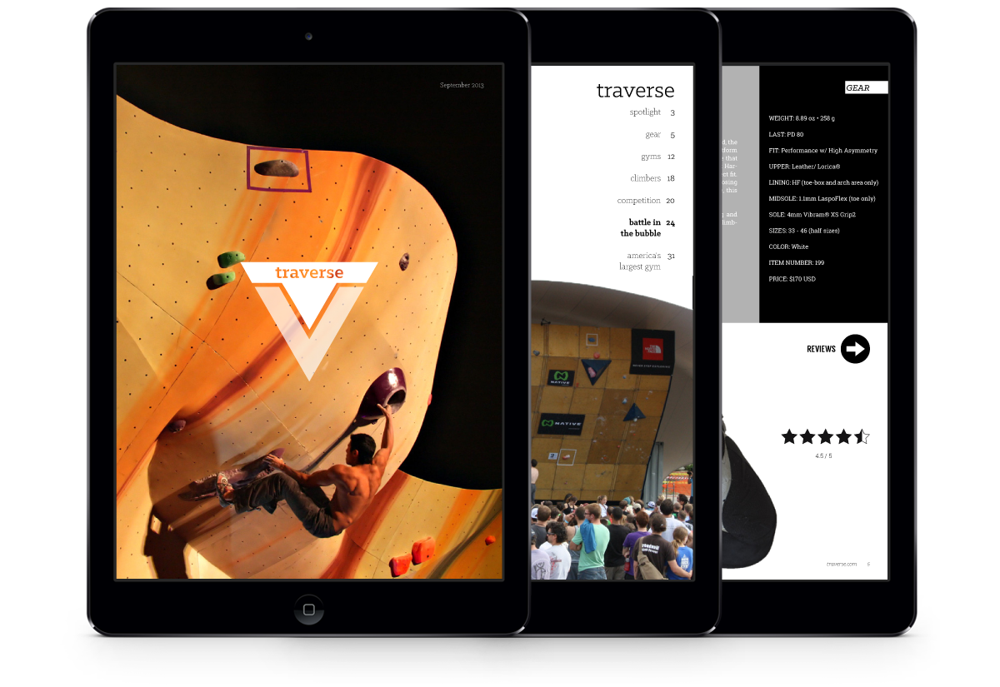

Traverse
Indoor Rock Climbing Magazine (Student Project)
Traverse is a digital magazine best viewed on a tablet. This indoor climbing magazine aims to replicate the high-intensity of an outdoor climbing magazine geared towards indoor climbing. Topics relate to gym competitions, training guides, and gear reviews.
